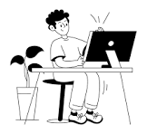
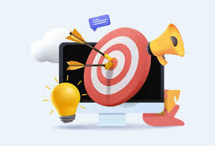
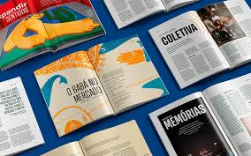

Meus trabalhos

Fonte Nova: Uma Família Tipográfica Completa
Este projeto apresenta uma família tipográfica criada do zero, com estilos variados para uso em títulos, textos e logos. A fonte é otimizada para leitura em telas e impressos.

Branding Futurista: Identidade Visual para Startups
Projeto de identidade visual que inclui logotipo, paleta de cores e aplicação de fontes customizadas para startups do setor de tecnologia e inovação.

Design Editorial: Revista Digital sobre Arte Urbana
Projeto editorial digital que explora o uso de tipografia experimental e layouts modernos para uma revista online focada em arte urbana e cultura pop.